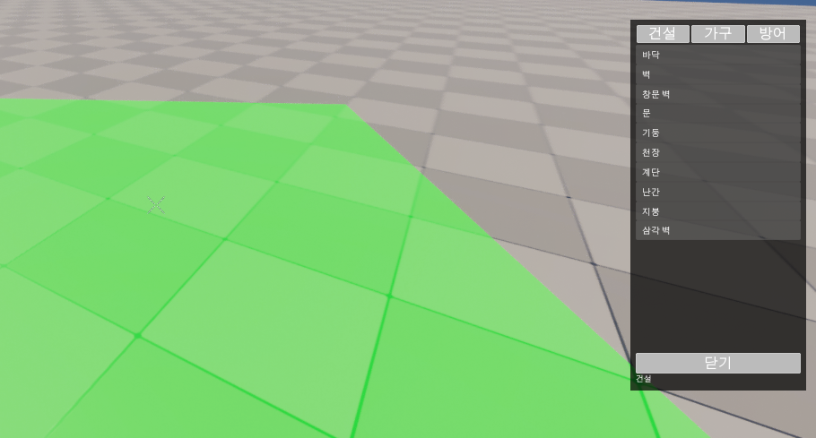
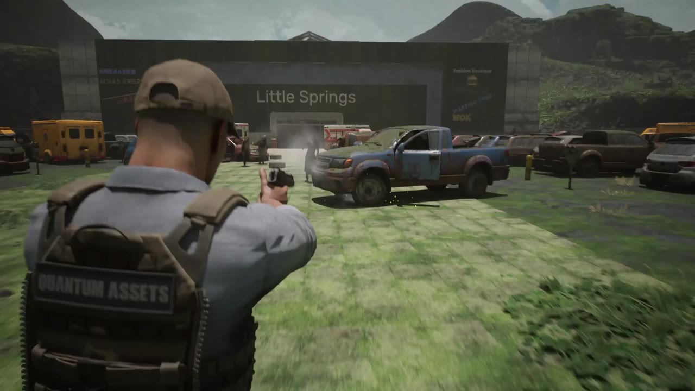
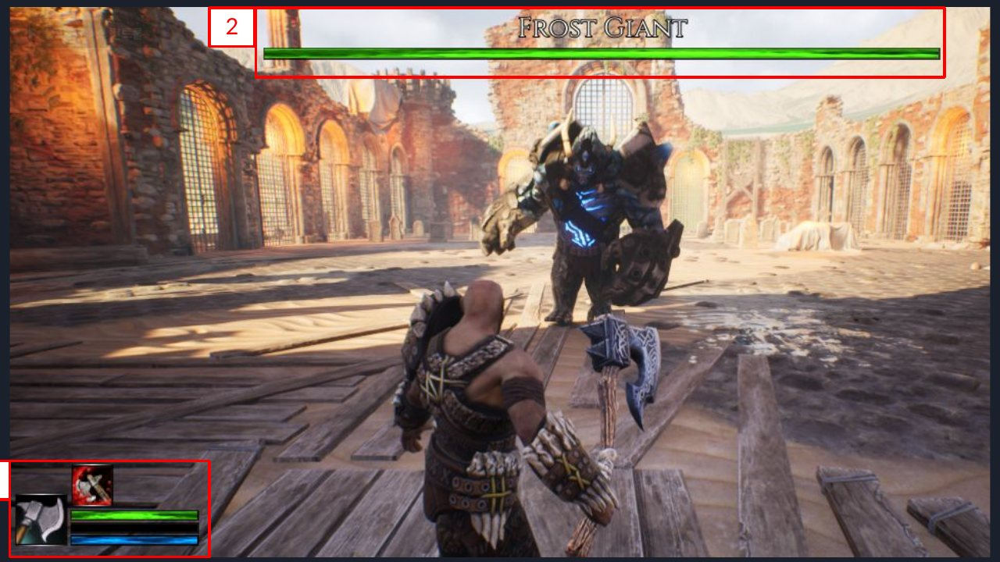
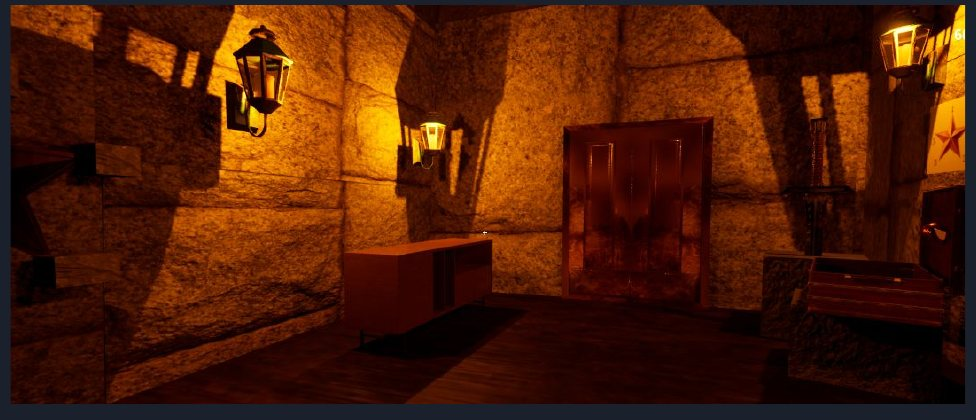

김진호Kim Jinho
Unreal Engine 5 클라이언트 프로그래머
개발 철학
보이지 않는 시스템이 단단해야 플레이가 즐거워진다고 믿는 개발자입니다.
만들기 전에 구조를 먼저 설계하고, 끝내기 전에 테스트와 로그로 확인합니다.
팀이 함께 쓰기 좋은 코드를 목표로, 겪은 시행착오는 기록해서 공유합니다.
언리얼 엔진 작업
언리얼 엔진 5로 액션 RPG, 방탈출, 익스트랙션 슈팅, 생존 크래프팅을 만들었습니다.
개인 프로젝트부터 4인 팀 협업까지, 싱글플레이와 멀티플레이를 모두 개발했습니다.
전투, AI, 건설, 네트워크, UI까지 게임을 이루는 시스템을 폭넓게 직접 구현합니다.
프로젝트
팀 프로젝트 3개와 개인 프로젝트 1개입니다. 각 프로젝트에서 제가 직접 만든 부분만 적었습니다.
-
빌드 메뉴와 배치 고스트

FallenEra
1인칭 멀티플레이 생존 크래프팅, 개발 중
- 소켓 스냅 모듈러 건설과 서버 재검증 배치
- 다익스트라로 지지 거리를 구하는 구조 안정성과 연쇄 붕괴
- GAS 피해 경로를 그대로 쓰는 함정과 탑승형 발리스타
-
탐사 구역 교전

OutBreak
3인칭 익스트랙션 생존 슈팅, 완성
- GAS 무기 4종과 사격 모드, 서버에서 두 번 트레이스하는 사격 판정
- 탐사 세션, 개인 탈출구 배정, 기절과 부활, 관전
- Steam 파티와 매칭, 데디케이티드 서버 접속
-
보스전과 플레이어 HUD

Fantasy Action
액션 RPG, 완성
- GAS 전투와 역할별 컴포넌트로 나눈 캐릭터 구조
- Behavior Tree, EQS, AI Perception으로 만든 적 AI
- 무기마다 바뀌는 Linked Anim Layer와 보스 등장 컷신
-
비밀의 방

Magic School
1인칭 방탈출 퍼즐, 완성
- Physics Handle로 만든 잡기, 놓기, 회전
- 아이템 추가, 버리기, 이동이 되는 인벤토리
- 나이아가라 이펙트와 남은 시간 타이머 UI
기술별로 보기
어떤 기술을 어느 프로젝트에서 썼는지 정리했습니다. 칸을 누르면 그 기술을 설명한 부분으로 바로 이동합니다.
| 기술 | FallenEra | OutBreak | Fantasy Action | Magic School |
|---|---|---|---|---|
| 멀티플레이 서버 권한, 리플리케이션 | 서버 재검증 | 서버 사격 판정 | ||
| GAS (어빌리티, 이펙트, 큐) | 함정과 발리스타 | 무기 어빌리티 | 전투 컴포넌트 | |
| 온라인 (Steam 세션, 데디케이티드 서버) | 파티와 매칭 | |||
| 데이터 주도 설계 (DataAsset, Asset Manager) | 피스 정의 | 무기 데이터 | ||
| 게임 규칙과 알고리즘 | 지지 거리 | 탈출구 배정 | ||
| 적 AI (Behavior Tree, EQS, Perception) | BT와 EQS | |||
| 애니메이션 (Linked Anim Layer, Motion Warping) | 무기별 레이어 | |||
| UI (UMG, MVVM) | 빌드 메뉴 | 로비와 HUD | 전투 HUD | 화면 구성 |
| 연출 (Sequencer, Niagara) | 보스 컷신 | 퍼즐 이펙트 | ||
| 물리 상호작용 (Physics Handle) | 잡기와 회전 | |||
| 자동화 테스트, 코드 리뷰 | Issue와 PR |
일하는 방식
완료 조건부터 적습니다
구현 전에 GitHub Issue에 작업 범위와 완료 조건을 정리합니다. 기능 단위 브랜치로 나누고, 팀원 리뷰를 거친 PR만 병합합니다.
직접 띄워서 확인합니다
멀티플레이 기능은 호스트와 클라이언트 2인 PIE에서 조작, 기대 결과, 기대 로그를 맞춰 봅니다. 다시 깨지면 안 되는 규칙은 자동화 테스트로 남깁니다.
AI는 검토에만 씁니다
Claude Code는 설계 검토와 원인 분석에 쓰고, 코드는 직접 작성합니다. 겪은 시행착오 47건은 팀 규칙 문서(CLAUDE.md)에 적어 다음 작업에 반영합니다.